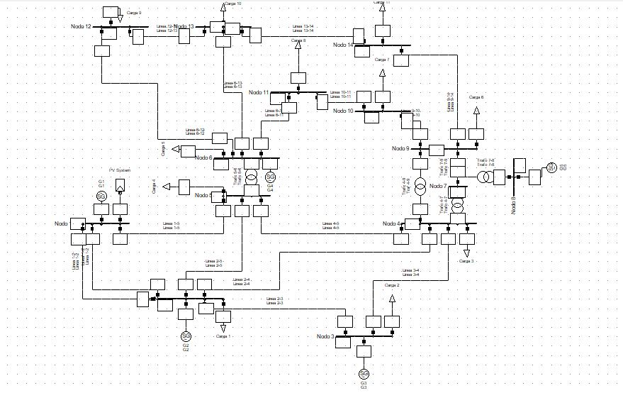

Optimal location of a solar plant in the IEEE14 system
Power flow studies, more commonly known as load flow studies, are very important when evaluating the operation of power systems, controlling them and planning them for future expansion. A power flow study mainly provides the real and reactive power and a voltage phasor in each conductor of the system.
In relation to the previously presented concept, the objective is to simulate a one-line diagram of the 14-node power system in the DigSilent PowerFactory program, in order to be able to analyze: voltage profiles in all nodes, power flows and losses in the lines . Finally, it is necessary to identify the node in which it is optimal to connect the solar plant.
In the detailed study of the system, different scenarios are taken into account that allow us to observe the behavior of the nodes, just at the moment when the solar plants of the ENEL GREEN POWER group enters to dispatch. It will be mainly taken into account that the voltage levels of the system are within the range of 0.95 and 1.05 P.U. and that the loss levels are at the lowest values.
If you want to know more about this project you can contact me on my socials.